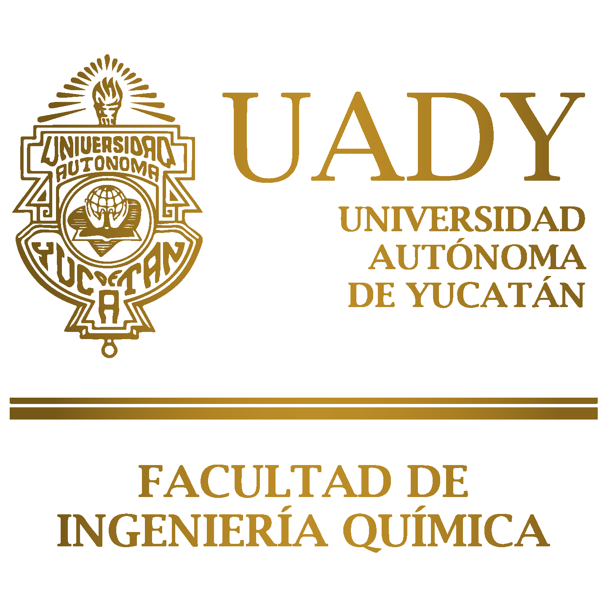

El futuro de la investigación aplicada The future of applied research
Plataforma científica de excelencia y acceso abierto para la difusión del conocimiento. Scientific platform of excellence and open access for knowledge dissemination.
La Revista de Ciencia e Ingeniería Aplicada De La UADY (RCIA) es una publicación científica de acceso abierto, semestral, editada por la Facultad de Ingeniería Química de la Universidad Autónoma de Yucatán (UADY). Nuestra misión es difundir resultados originales de investigación, revisiones bibliográficas y ensayos científicos en todas las áreas de la ciencia, la ingeniería y la tecnología. The UADY Journal of Applied Science and Engineering (RCIA) is a biannual, open-access scientific publication edited by the Faculty of Chemical Engineering of the Autonomous University of Yucatan (UADY). Our mission is to disseminate original research results, literature reviews, and scientific essays in all areas of science, engineering, and technology.
Aceptamos contribuciones en español e inglés, promoviendo el intercambio académico y la visibilidad internacional de la investigación generada en México e Iberoamérica. We accept contributions in Spanish and English, promoting academic exchange and the international visibility of research generated in Mexico and Latin America.
En esta sección se disponen los requerimientos para el envío de manuscritos a la revista. El documento incluye los tipos de contribuciones aceptadas, el proceso de envío, el formato del manuscrito, los lineamientos éticos y la declaración de herramientas tecnológicas. This section provides the requirements for submitting manuscripts to the journal. The document includes accepted contribution types, the submission process, manuscript formatting, ethical guidelines, and the declaration of technological tools.
Descargar PDFDownload PDFConsulta las ediciones completas de la revista o explora los artículos publicados de manera individual. Browse full journal issues or explore individually published articles.
Cada artículo se presenta con portada cuadrada, título, autores principales y enlace de consulta. La plantilla deja listos cuatro espacios; en escritorio se muestran hasta tres artículos por fila para aprovechar el ancho de la página. Each article is shown with a square cover, title, main authors, and access link. The template includes four prepared slots; on desktop, up to three articles are displayed per row.